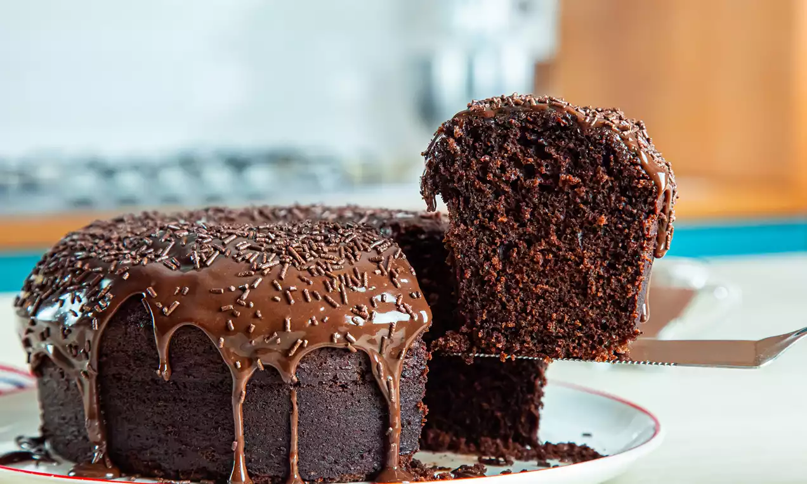

Ingredientes
- 4 ovos
- 2 colheres(sopa) de manteiga
- 2 xícaras(chá) de açúcar
- 1 xícarea(chá) de leite
- 4 colheres(sopa) de chocolate em pó
- 3 xícaras(chá) de farinha de trigo
- 2 colheres(sopa) de fermento
Modo de Preparo
- Em um liquidificador adicione os ovos, o chocolate em pó, a manteiga, a farinha de trigo, o açúcar e o leite, depois bata por 5 minutos.
- Adicione o fermento e misture com uma espátula delicadamente.
- Em uma forma untada, despeje a massa e asse em forno médio (180 ºC) preaquecido por cerca de 40 minutos.
Bolo de Chocolate
